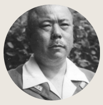
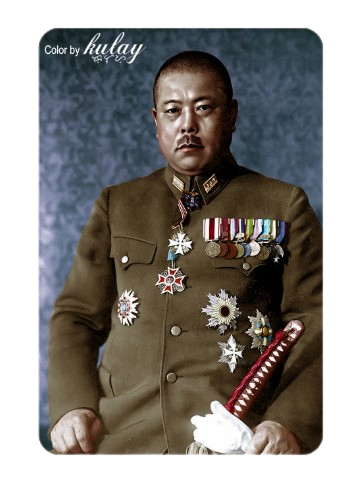

Tomoyuki Yamashita (Osugi Mura, 8 de novembro de 1885 - Los Baños, 23 de fevereiro de 1946) foi um
general do Exército Imperial do Japão, famoso como conquistador da Malásia e de Singapura, no começo
da Guerra do Pacífico, durante a Segunda Guerra Mundial, feito pelo qual passou ser conhecido como
"Tigre da Malásia". Preso, julgado e condenado como criminoso de guerra após a rendição japonesa,
foi enforcado nas Filipinas em fevereiro de 1946.
Yamashita era filho de um médico da pequena vila onde nasceu, na ilha de Shikoku, mas não seguiu a
carreira do pai, preferindo a carreira militar. Em 1905 graduou-se como cadete e cursou a escola de
guerra do exército entre 1913 e 1916. Com a patente de capitão, serviu como adido militar em Berna e
Berlim, entre 1919 e 1921.
Apesar de suas habilidades como oficial, Yamashita caiu em desgraça nos meios militares durante os
anos 20 e 30 a meio das disputas internas entre a cúpula militar japonesa. Ele entrou em choque como
Ministro da Guerra, Hideki Tojo, por fazer parte da facção que apoiava o poder imperial sobre as
forças armadas, contra a facção liderada por Tojo, que pregava o controle da política externa armada
do Japão nas mãos dos militares.
Ele também caiu em desfavores com o Imperador Showa, ao tentar interceder pela clemência aos jovens
oficiais japoneses numa rebelião do baixo oficialato do exército em fevereiro de 1936 e sempre
insistiu em que o Japão deveria terminar o conflito com a China (ver Segunda Guerra Sino-Japonesa) e
manter relações amigáveis com os Estados Unidos e a Grã-Bretanha, mas era ignorado por suas opiniões
e foi investido de um comando sem importância no interior da Manchúria, onde participou de alguns
combates entre 1938 e 1940 contra insurgentes chineses da região. Em dezembro de 1940, foi enviado
pelo governo numa missão clandestina à Alemanha e a Itália, onde se encontrou com Adolf Hitler e
Benito Mussolini.
Em 8 de dezembro de 1941, no comando do 25° Exército japonês, o general Yamashita invadiu a Malásia
partindo da Indochina. Na campanha, que terminou em 15 de fevereiro de 1942 com a captura de
Singapura (ver Cerco de Singapura), os 30 mil soldados de Yamashita capturaram, feriram ou mataram
110 mil homens das tropas britânicas, indianas, malaias e australianas, o exército da Comunidade
Britânica, na maior rendição já sofrida pelo Império Britânico, o que lhe valeu a alcunha de Tigre
da Malásia.
A campanha e a subsequente ocupação da Malásia, incluiu crimes de guerra contra militares e civis,
como os do Hospital Alexandra; a culpa do general nestes episódios é controversa, já que ele mesmo
mandou enforcar o oficial japonês responsável pelo massacre no hospital, como exemplo para a tropa.
Apesar da vitória, entretanto, em 17 de julho Yamashita foi retirado do comando na Malásia e enviado
para a Manchúria, onde passou quase dois anos num comando inferior e fora do teatro de guerra do
Pacífico. Acredita-se que este banimento tenha sido obra do agora Primeiro-Ministro Tojo, se
aproveitando do que foi considerada uma gafe de Yamashita, ao discursar aos líderes civis de
Singapura depois da conquista da ilha, chamando-os de “cidadãos do Império do Japão”, considerado
bastante embaraçoso pelo governo, que não considerava habitantes dos territórios ocupados como
cidadãos japoneses.

Nome completo: Tomoyuki Yamashita
Nascimento: 8 de novembro de 1885
Morte: 23 de fevereiro de 1946
Anos de serviço: 1905–1945
Patente: Tenente-General
Conflitos: Segunda Guerra Sino-Japonesa
Guerra do Pacífico
